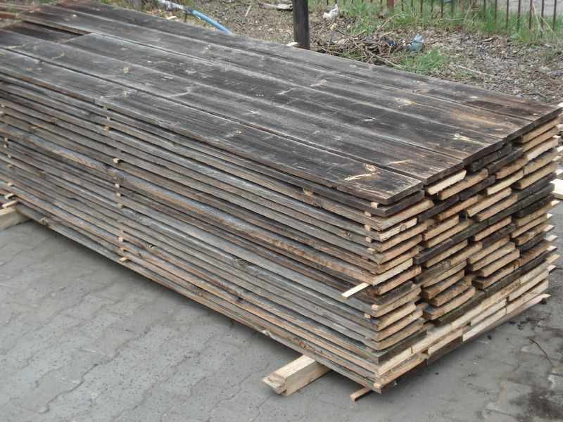
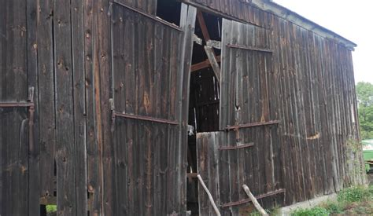

Przyjmujemy zlecenia na rozbiórki obietków drewnianych tzw. zimnych stodoły, wiaty, garaże itp. oprócz domów.
Rozbieramy obiekty w zamian za materiał - tylko drewno iglaste.
Kupujemy deski obiciowe, dachowe (oprócz tych spod papy) i z wrót.
Deski nie mogą być malowane, olejowane itp.
Bali zewnętrzynych i konstrukcyjncyh nie kupujemy.
Płacimy gotówką lub wymieniamy stare deski na nowe.
Deski które skupujemy
Minimalne wymiary desek: długość - 2m, szerokość - 12cm, grubość 2.1cm
Ceny ustalamy indywidualnie w zależności od jakości drewna.

